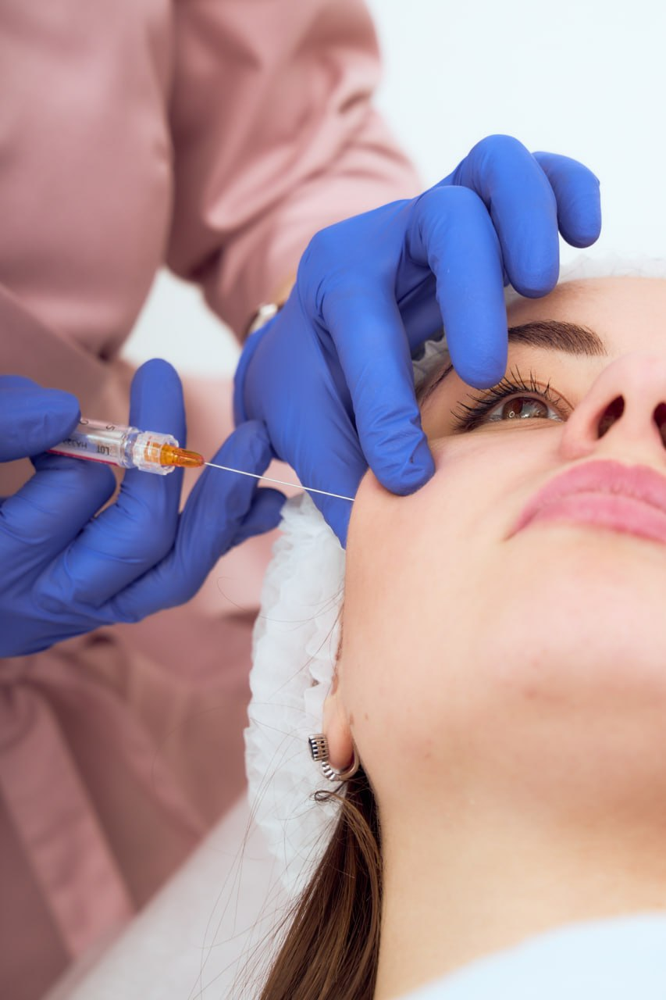

Лазерна епіляція
Безболісне та ефективне видалення небажаного волосся на сучасному лазері останнього покоління.

Дерматологія
Комплексний медичний підхід до лікування хвороб шкіри, висипань та професійна діагностика.

Косметологія
Доглядові процедури, чистки та пілінги для підтримання природного здоров'я та сяяння шкіри.

Ін'єкційні процедури
Контурна пластика губ, біоревіталізація та мезотерапія для глибокого зволоження та гармонії обличчя.

Ботулінотерапія
Ефективне розгладження мімічних зморшок навколо очей та на лобі з ефектом природного обличчя.

RF-ліфтинг
Безболісна апаратна підтяжка шкіри обличчя за допомогою радіохвильового ліфтингу.

Лазерне видалення судин
Безпечне та швидке усунення судинних зірочок та куперозу на обличчі та тілі.